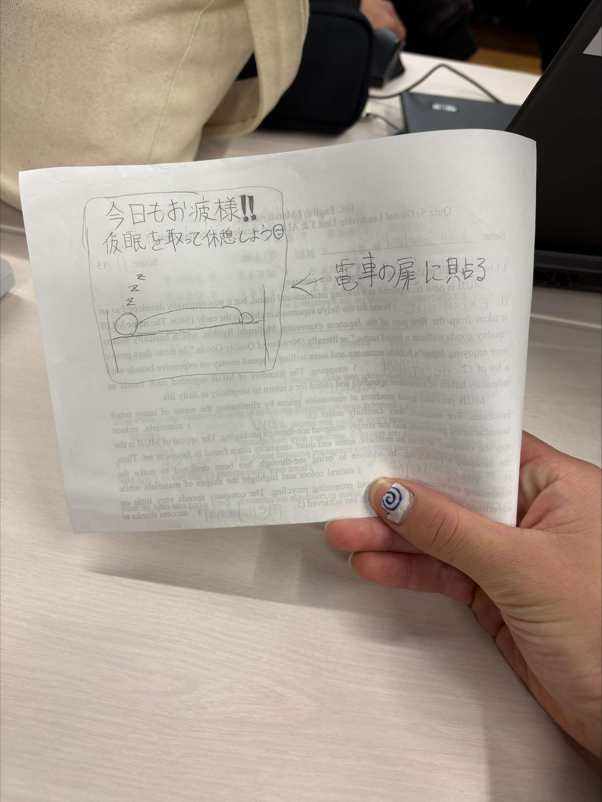
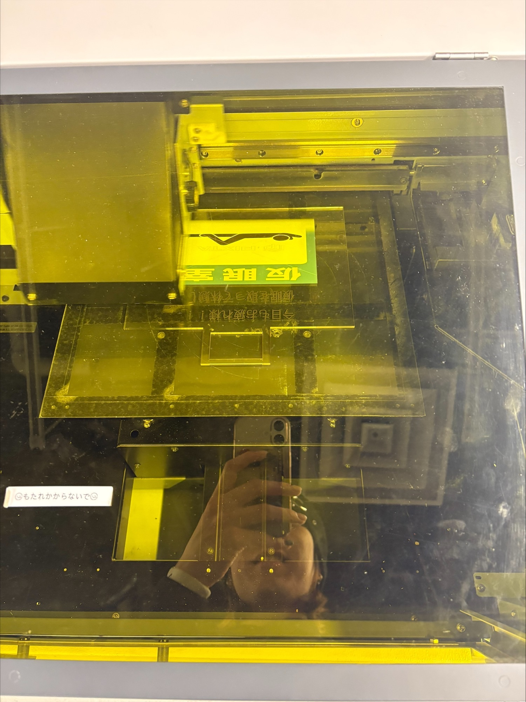
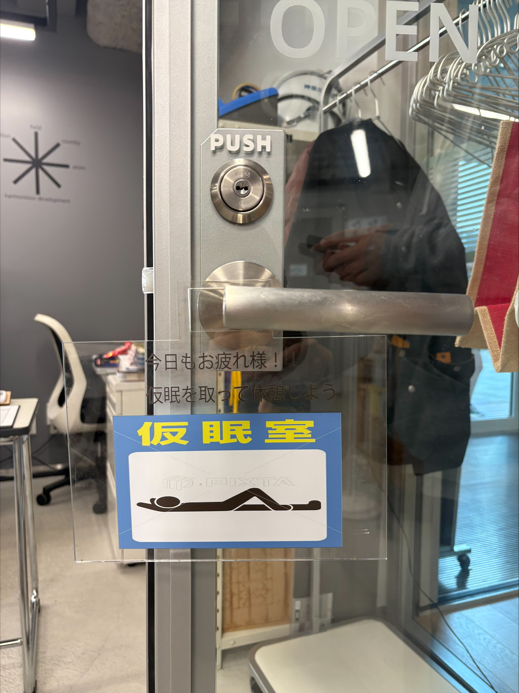

◯ よく見る事象
電車で仮眠を取る人が多く、その人たちが快適に休めるスペースを提供できないかという観点から本プロジェクトが始まった。 しかし、電車内に新たに仮眠スペースを設けることは現実的ではないため、 より身近な学校や作業スペースへ視点を移し、誰でも入りやすく、分かりやすく、安心して休息できる空間づくりを目標とした。 また、学校内では「入っていい部屋なのか分からない」という心理的ハードルも存在するため、 その問題を解消しながら快適な休憩空間をデザインすることを目的とした。
◯ 構想段階のスケッチ


◯ 実際に作った作品

◯ 設計ファイル
ドアノブに引っ掛けて使用することを前提とし、上部にフック状のカーブを持つプレートを設計した。 ドアノブの太さに合わせるため、複数回のサイズ調整を行いながら形状を確定させた。
◯ 作品について
文字を読まなくても休めるスペースであると直感的に分かるよう、ピクトグラムを主な視覚要素として採用した。 さらに、利用者の気持ちが軽くなるよう、疲れを癒すメッセージを添えたデザインとした。